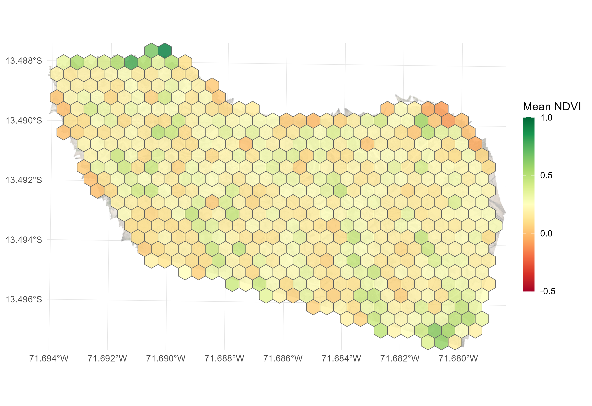

Case 02 - Grid Generation & Zonal Statistics
Source:vignettes/case2_grids_zonal_statistics.Rmd
case2_grids_zonal_statistics.RmdPartitioning drone flight footprints into operational surveillance grids and extracting zonal summary metrics
1 Objective
Partition the continuous flight mosaic into regular spatial grids (hexagonal or square) with custom parameters, extract zonal summary statistics per cell, identify spatial anomalies using Tukey IQR outlier fences, and export multi-sheet executive spreadsheets.

2 Functions from drones4health
| Variable / Target | Function | Description |
|---|---|---|
| Hexagonal Grid | d4h_hex_grid() |
Generates regular hexagonal surveillance partitions with unique alphanumeric identifiers (H0001, H0002). |
| Zonal Summary Grid | d4h_summarize_grid() |
Extracts zonal summary statistics (mean, quantiles) per square or hexagonal cell with automated NoData background pruning. |
| Scene General Polygon | d4h_summarize_general() |
Computes global mean indicators across the exact valid flight footprint as a single reference spatial vector. |
| Homogeneous Mosaic | d4h_raster_general() |
Generates a continuous raster matching the flight extent filled with overall global mean values. |
| Executive Reporting | d4h_executive_summary() |
Extracts multi-moment descriptive statistics, Tukey IQR outlier fences, and exports multi-sheet Excel reports. |
3 Workflow
3.2 Spatial Data Preparation
We load the computed environmental indicator rasters (NDVI and NDWI) derived from the drone flight:
3.3 Parametric Grid Generation (Hexagonal vs Square)
drones4health provides flexible spatial partitioning
parameters:
-
cell_size: Resolution or diameter of each grid cell in meters (e.g., 20 m for household peridomestic inspections, 50 m for rural blocks, 100 m for regional transects). -
square: SetFALSEfor regular hexagonal partitions orTRUEfor square grids. Hexagonal tessellations minimize perimeter-to-area ratio and provide equidistant neighborhood connectivity. -
discard_na: Automatically removes peripheral cells falling outside the valid flight footprint.
# Generate 50-meter hexagonal surveillance grid
grid_hex <- d4h_hex_grid(
aoi = r_ndvi,
cell_size = 50
)
# Inspect grid structure
head(grid_hex)3.4 Zonal Statistical Extraction
We aggregate continuous pixel values across each operational grid cell:
# Extract zonal mean NDVI per 50m hexagonal cell
grid_summary_ndvi <- d4h_summarize_grid(
raster_in = r_ndvi,
cell_size = 50,
square = FALSE, # Hexagonal geometry
discard_na = TRUE # Prune empty peripheral cells
)
# Inspect extracted values per grid unit
head(as.data.frame(grid_summary_ndvi))
# Compute overall scene reference baseline
gen_summary <- d4h_summarize_general(raster_in = r_ndvi, exact_boundary = TRUE)
r_homo <- d4h_raster_general(raster_in = r_ndvi)3.5 Tukey Spatial Outlier Diagnostics & Excel Export
We execute a comprehensive statistical report evaluating descriptive moments (mean, standard deviation, coefficient of variation, median, IQR), detecting spatial anomalies with Tukey fences (, ), and exporting directly to Excel:
# Multi-moment executive summary aggregated by grid cell
resumen_grillas <- d4h_executive_summary(
raster_in = r_ndvi,
by = "grid",
cell_size = 50,
square = FALSE,
out_xlsx = "salidas/Executive_Summary_Grids_NDVI.xlsx",
sample_size = 1000000,
digits = 3
)
# Inspect report output
print(resumen_grillas)==============================================================================
DRONES4HEALTH - EXECUTIVE SUMMARY REPORT
==============================================================================
INDICATOR: NDVI
------------------------------------------------------------------------------
1. SPATIAL COVERAGE AND RESOLUTION:
- Pixel Resolution : 99.21 cm
- Surveyed Area : 64.628 ha (646,276 m2)
- Evaluated Pixels : 656,624 (36.5% valid footprint coverage)
2. GLOBAL DESCRIPTIVE STATISTICAL MOMENTS:
- Arithmetic Mean : 0.238 (+/- 0.255 SD)
- Coeff. of Variation : 106.9 %
- Overall Range [Min,Max]: [-0.954, 0.99] (Span: 1.944)
- Median (Q50) : 0.182
- Interquartile Range : [0.052, 0.399] (IQR: 0.347)
- Central 90% Span : [-0.083, 0.716] (P05 - P95)
3. SPATIAL OUTLIER DIAGNOSTICS (TUKEY IQR):
- Tukey IQR Fences : Lower < -0.469 | Upper > 0.92
- Outliers Detected : 5,388 pixels (0.82% of valid pixels)
- Spatial Diagnostics : Homogeneous distribution (extreme values < 1%)
4. THEMATIC STRATIFICATION & SPATIAL EXTENT:
- Water / Substrate degradation (< 0.0) : 14.7 % ( 9.53 ha)
- Bare soil / Sparse canopy [0.0, 0.2) : 38.2 % ( 24.67 ha)
- Moderate vegetation / Transition [0.2, 0.5): 29.4 % ( 18.99 ha)
- Dense vegetation / High vigor [>= 0.5) : 17.7 % ( 11.44 ha)
==============================================================================3.6 Cartographic Visualization & Interactive Grid Mapping
We visualize the operational grid units using the unified
d4h_plot() function, switching between static and
interactive modes:
# 1. Publication-quality ggplot2 mapping of zonal indicators (interactive = FALSE)
p_grid <- d4h_plot(
x = grid_summary_ndvi,
interactive = FALSE,
palette = "viridis",
title = "Zonal Surveillance Grid (50m Hexagons)"
)
print(p_grid)
# 2. Interactive web map exploration via mapview (interactive = TRUE)
m_grid <- d4h_plot(
x = grid_summary_ndvi,
interactive = TRUE,
palette = "viridis",
title = "Zonal Surveillance Grid (50m Hexagons)"
)
m_grid